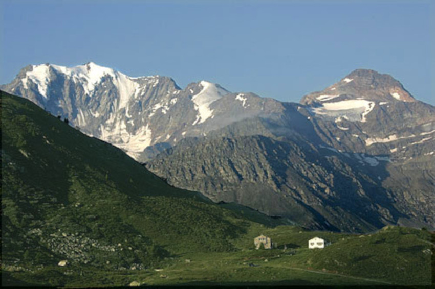

Ressenyes d'obres de Mary Shelley
- Frankenstein o el Prometeu modern (1818)
-
La novel·la explica la història de Víctor Frankenstein, un científic que crea un ésser humà de grans dimensions i aspecte repulsiu. En veure la monstruositat que ha creat, el rebutja i fuig, però el monstre, sentint el rebuig de la humanitat, cerca venjança. Després de diversos esdeveniments tràgics, com l'assassinat del seu germà i l'execució d'una criada innocent, el monstre exigeix que Víctor creï una companya per a ell. Víctor accedeix, però, en penedir-se'n, destrueix la seva creació. El monstre, enfurismat, assassina amics i familiars de Víctor.
Desesperat, Víctor persegueix el monstre fins al Pol Nord, on relata la seva història al capità Robert Walton abans de morir. La criatura, consumida pel remordiment, promet posar fi a la seva vida, dient que la seva existència ja no té sentit. La història es narra a través de les cartes de Walton a la seva germana, el relat de Víctor i, finalment, el diari de Walton.
Frankestein és una icona de la cultura popular, especialment en el cinema.
Víctor Frankenstein (2015), dirigida per Paul McGuigan | Tràiler oficial subtitulat
- L'últim home (1826)
-
L'últim home és una novel·la postapocalíptica, publicada el 1826.
La història se situa en el futur, a finals del segle XXI, i segueix la vida de Lionel Verney, l'últim home supervivent d'una plaga devastadora que arrasa la humanitat. Al llarg de tres volums, Shelley narra la vida de Verney i dels seus amics, explorant els seus amors, traïcions, lluites polítiques i les conseqüències d'un desastre global.
La trama està marcada per la presència d'una plaga mortal que extermina la major part de la població mundial, i deixa els supervivents lluitant no només contra la malaltia, sinó també contra la desesperació i el buit existencial. A través dels seus personatges, Shelley examina la fragilitat de la vida humana, les lluites pel poder i les emocions que romanen fins i tot quan la societat es desintegra. La novel·la també tracta temes d'amor no correspost, sacrifici i lluita per la supervivència, mentre els pocs personatges restants intenten trobar sentit en un món que ja no sembla tenir propòsit.
- Lodore (1835)
-
Aquesta és la penúltima novel·la escrita per Mary Shelley, acabada el 1833 i publicada el 1835.
La història central relata la vida de l'esposa i la filla del personatge que dona títol a l'obra, Lord Lodore, que és assassinat en un duel, deixant un camí d'obstacles legals, financers i familiars perquè les dues heroïnes els resolguin. Mary Shelley ubica els personatges femenins al centre de la narrativa: la filla de Lodore, Ethel, creix essent massa dependent del control patern; l'esposa, Cornelia, es preocupa massa per les normes i les aparences de la societat aristocràtica; i la intel·lectual i independent Fanny Derham, el contrast de totes dues.
Segons el punt de vista de la crítica Betty T. Bennett, "la novel.la proposa paradigmes educatius iguals per als homes i per a les dones, els quals establirien la justícia social a més de proveir de l'ajuda espiritual i intel·lectual que ajuda a enfrontar els desafiaments que la vida té invariablement".
- Història d'una excursió de sis setmanes (1817)
-
Història d'una excursió de sis setmanes és un llibre de viatges escrit per Mary Shelley i Percy Bysshe Shelley, el seu marit. Publicat el 1817, descriu dos viatges de Mary, Percy i la germanastra de Mary, Claire Clairmont: un a través d'Europa el 1814, i un altre pel llac de Ginebra el 1816. Dividit en tres seccions, el text consta d'un diari, quatre cartes, i el poema de Percy Shelley Mont Blanc. Excloent el poema, el text va ser principalment escrit i organitzat per Mary Shelley. El 1840 va revisar el diari i les cartes, tornant-los a publicar en una col·lecció de les obres de Percy Shelley.
S'inscriu en el nou gènere de la narrativa de viatges del romanticisme, la història desborda espontaneïtat i entusiasme i els autors demostren el desig de distingir-se a si mateixos dels que els envolten.
- Caminades per Alemanya i Itàlia, el 1840, 1842, i 1843 (1844)
-
Caminades per Alemanya i Itàlia, el 1840, 1842 i 1843 és el llibre que narra els viatges que van fer per Europa Mary Shelley i el seu fill, Percy Florence Shelley, i diversos dels seus amics de la universitat.
Mary Shelley havia viscut a Itàlia amb el seu marit, Percy Bysshe Shelley, entre el 1818 i el 1823. Per a ella, Itàlia estava associada tant amb la felicitat com amb el dol: havia escrit moltes obres durant la seva estada al país però també havia perdut el seu marit i dos dels seus fills. Per tant, encara que estava ansiosa per tornar, el viatge es va veure marcat per la pena. Shelley descriu el seu viatge com un pelegrinatge, que ajudaria a curar la seva depressió.
Can it, indeed, be true, that I am about to revisit Italy? How many years are gone since I quitted that country! There I left the mortal remains of those beloved—my husband and my children, whose loss changed my whole existence, substituting, for happy peace and the interchange of deep-rooted affections, years of desolate solitude, and a hard struggle with the world, which only now, as my son is growing up, is brightening into a better day. The name of Italy has magic in its very syllables.
Després de desembarcar a França, Shelley continua anticipant feliçment els seus viatges i els beneficis que n'obtindria. Viatjant per Alemanya, es queixa de la lentitud del viatge però es mostra contenta en descobrir que els seus records del Rin es corresponen amb la realitat. Shelley emmalalteix a Alemanya i es retira a Baden-Baden per recuperar-se. Quan recupera la seva salut i el seu ànim, el grup viatja cap a Itàlia, on l'envaeix la nostàlgia.
Shelley escriu sobre la seva felicitat a Itàlia i la seva tristesa davant de la perspectiva d'anar-se'n. A finals de setembre, no arriben els diners que li possibilitarien tornar a Anglaterra, de manera que Percy Florence i els seus amics tornen sense ella. Finalment els diners arriben, i viatja sola cap al seu país. A les cartes on relata el viatge de tornada, descriu els paisatges sublims que recorre, principalment el Port del Simplon i les cascades a Suïssa.

Fletschhorn vist des de la vall del Simplon | Roland Zumbühl, CC BY-SA 3.0, via Wikimedia Commons
- El mal d'ull (1829)
-
El mal d'ull és un relat breu escrit per Mary Shelley i publicat el 1830. El relat es desenvolupa a Grècia i tracta d'un home conegut com a Dimitri el del mal d'ull. L'esposa de Dimitri va ser assassinada i la seva filla segrestada molts anys abans de començar la història. Durant molt de temps va buscar-la; però va acabar donant-se per vençut en rebre terribles ferides que el van deixar desfigurat.
La seva aparença i el seu caràcter brutal van portar a la creença que era portador del mal d'ull.
He grew old in these occupations; his mind became reckless, his countenance darker; men trembled before his glance, women and children exclaimed in terror, The Evil Eye!
- Transformació (1831)
-
Transformació és una obra escrita el 1830. El narrador, Guido, explica la seva pròpia història. Genovès del segle XV, compromès amb Julieta, la filla d'un amic del seu pare, marxa a París abans de casar-se on dilapida la seva fortuna. En tornar a Gènova el pare de Julieta li comunica que per la seva irresponsabilitat financera s'ha d'anul·lar el compromís amb Julieta; malgrat això el pare de Julieta li ofereix una fortuna a canvi d'acceptar el seu control; Guido ho rebutja i, després d'un intent de raptar a Julieta, és desterrat de la ciutat.
Desesperat, sense diners, vaga per la platja i veu com un vaixell s'enfonsa. Un ésser estrany apareix flotant sobre un cofre; Guido explica la seva història a la criatura que li ofereix un tracte: durant tres dies s'intercanviaran els cossos a canvi del seu cofre ple de tresors. Guido accepta. Espera durant tres dies, però la criatura no torna per la qual cosa decideix anar a buscar-lo a Gènova.
Allà descobreix que la criatura, que ara té el seu cos, havia acceptat la fortuna i estava a punt de casar-se amb Julieta. Lluita amb la criatura que resulta mortalment ferida; Guido desperta novament en el seu propi cos; es casarà amb Julieta, però no podrà oblidar l'estranya experiència i el seu record el perseguirà per sempre.
Font: elaborat a partir de l'article de la Wikipedia Mary Shelley bibliography
{kind=link}